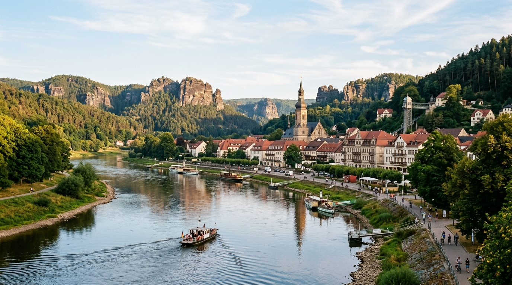
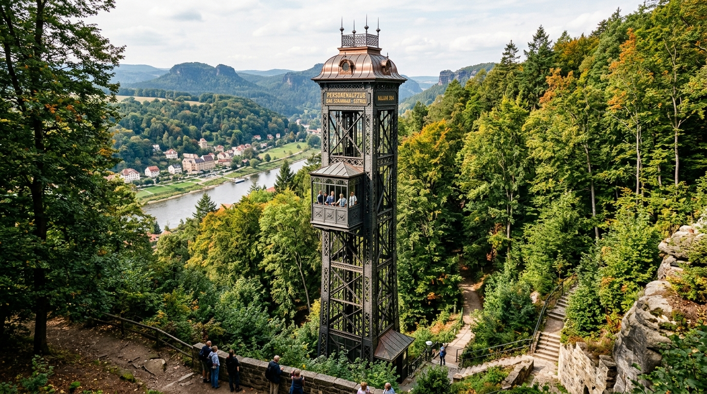
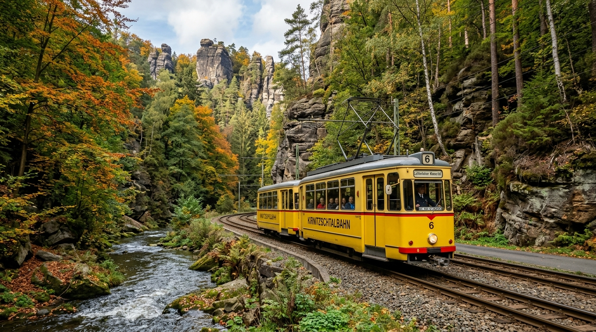
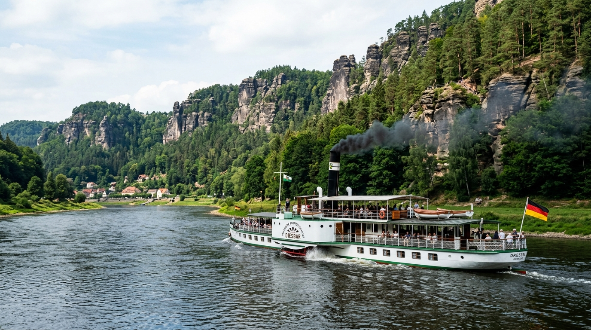

Stadt Bad Schandau
Bad Schandau ist die älteste Kur- und Bäderstadt der Sächsischen Schweiz. Gelegen direkt an der Elbe verbindet sie historischen Charme, Kneipp-Tradition und moderne Wellness mit unmittelbarer Nähe zu den Felsen des Nationalparks.

Historischer Personenaufzug nach Ostrau
Der 1904 erbaute, 50 Meter hohe freistehende Stahlturm im Jugendstil verbindet Bad Schandau mit dem höher gelegenen Ortsteil Ostrau. Oben angekommen genießt man einen weiten Panoramablick über das Elbtal und findet ein Luchsgehege.

Kirnitzschtalbahn
Seit 1898 fährt die traditionelle gelbe Überlandstraßenbahn auf 8 Kilometern entlang der schäumenden Kirnitzsch vom Bad Schandauer Kurpark bis zum Lichtenhainer Wasserfall – idealer Einstiegspunkt für zahlreiche Felsenwanderungen.

Elbschifffahrt & Fähren
Erkunde das Elbtal vom Wasser aus: Mit den Raddampfern der traditionsreichen Sächsischen Dampfschifffahrt oder den praktischen Fährverbindungen (z.B. Fähre F5) zwischen den Ortsteilen und Bahnhöfen.

Toskana Therme & Nationalparkzentrum
- Toskana Therme: Entspannung mit dem einzigartigen Liquid Sound Konzept (Musik und Licht unter Wasser) sowie großzügiger Saunalandschaft.
- Nationalparkzentrum: Interaktive Ausstellungen zur Entstehung des Elbsandsteingebirges, Flora und Fauna der Region.
- Marktplatz & St. Johanniskirche: Historischer Stadtkern mit spätgotischer Kirche, Renaissance-Altar und gemütlichen Cafés.